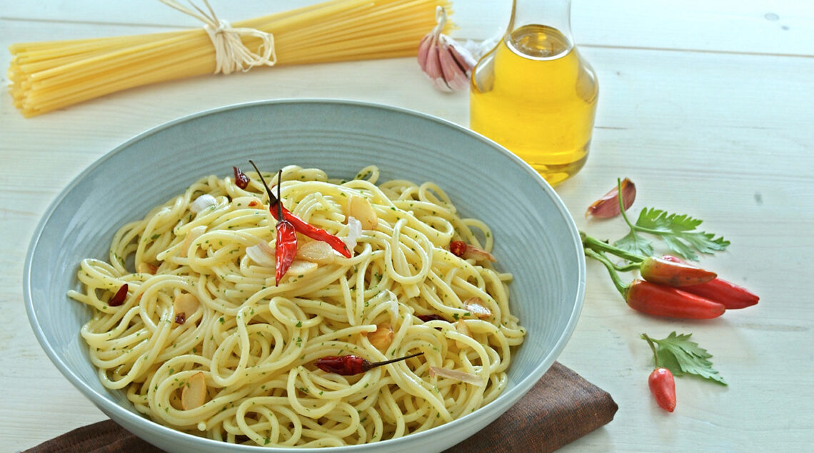

Pasta Aglio Olio e Peperoncino is one of the simplest pasta dishes that can be made.
Altough simple to prepare and containing few ingredients, this dish is suprisingly rich in taste. All spicy food lovers must have a go at this fiery recipe.
Ingredients serving for two
- Pasta lunga (Spaghetti): 160 gr
- Olio di oliva EVO: 4 tbsp (Be generous, more is better)
- Spicy peppers: 1 per person (Add more if you like spicy)
- Large garlic clovers: 1 per person
Steps
- Heat water to a boil.
- Finely chop garlic cloves and chili peppers.
- Once the water starts boiling, add salt, add the pasta, follow package instruction for the number of minutes to cook the pasta.
- Heat olive oil in a pan on low heat.
- Add chopped garlic and heat it for around 3 minutes (Stop cooking the garlic if it's turning brown).
- Add the chopped chili peppers a few moments before the garlic is ready (They don't need much cooking).
- Once the pasta is cooked, strain it and add the pasta to the pan with the oil,garlic and chilies. Stir everything together.
- Serve the pasta and as the Italians say:"Buon appetito".
Recipes list